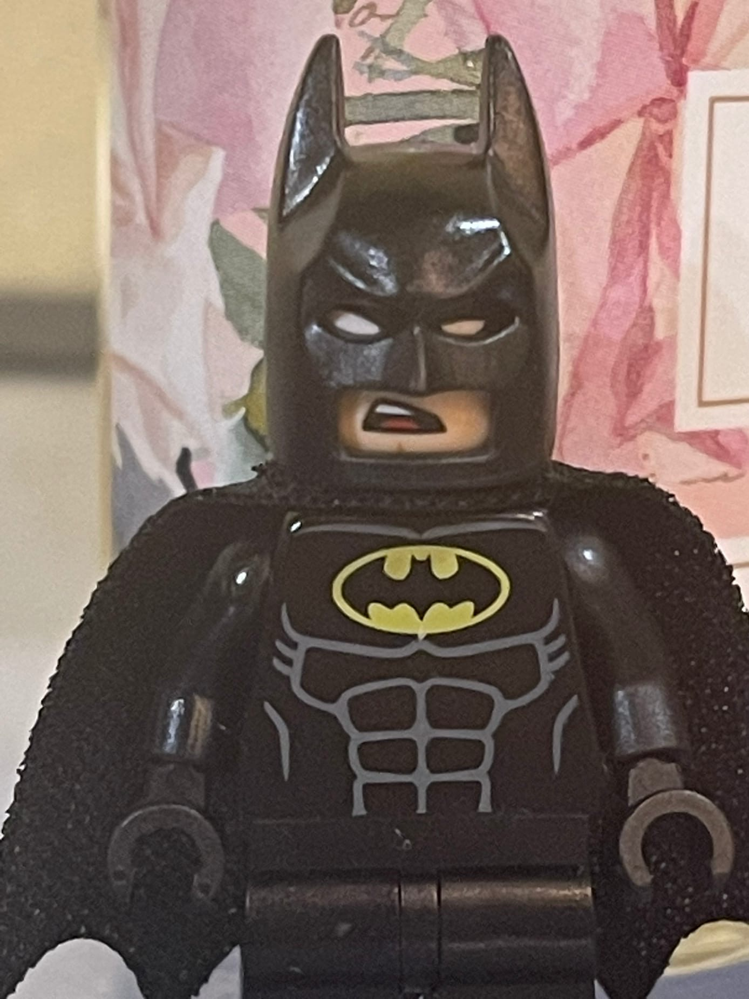

CAT BARSIK AS CAT BARSIK When the Cat Barsik was an ordinary kitten who lived at home with his owners and enjoyed life,
|
| ,  |
LEGO BATMAN AS LEGO BATMANThe legendary and most brutal hero in the world and Gotham in particular returns to talk about his new adventure.This time, the Dark Knight will go to the cold lands to meet the unknown, where dangers await him, as well as an unexpected guest, the Cat Barsik, who has lived in these parts for many years. Will Batman be able to return from such a dangerous adventure, or will this be his last chapter in history? |